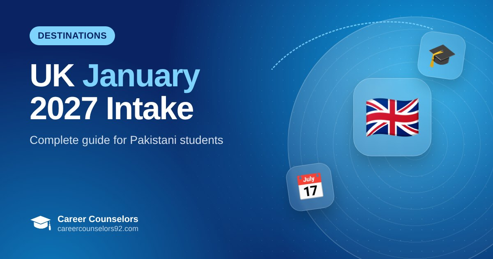

UK Student Visa Financial Requirements for Pakistani Students (2026/27)
Understand UK Student visa funds from Pakistan: tuition fees, living-cost amounts, the 28-day bank statement rule, parent sponsorship and required documents.

Key points for Pakistani applicants
- For applications made on 8 November 2026, GOV.UK lists £1,529 per month in London and £1,171 outside London, for up to nine months.
- You must also account for outstanding course fees shown on your CAS.
- Where the 28-day rule applies, the required balance must be held for 28 consecutive days and the evidence must be recent.
- Do not rely on future part-time earnings to meet the visa financial requirement.
For Pakistani students, arranging the finances is one of the most important parts of a UK Student visa application. A university offer is only the beginning: before applying, you need a valid Confirmation of Acceptance for Studies (CAS), the correct tuition-fee evidence and, where required, acceptable proof that you can support yourself in the UK.
This guide explains the financial rules published by UK Visas and Immigration (UKVI), how the 28-day requirement works and what students should prepare. The figures below are the official amounts displayed on GOV.UK when this article was reviewed on 8 November 2026. Always re-check the official page immediately before submitting your application because amounts and rules can change.
1. How much money do you need for a UK Student visa?
You must show enough money to cover unpaid tuition fees for one academic year (up to nine months) and the required living costs. Your CAS states the course fees and any tuition fees you have already paid to the university. The amount of maintenance money depends on whether your course is in London or outside London.
| Study location | Monthly amount | Maximum for 9 months |
|---|---|---|
| London | £1,529 | £13,761 |
| Outside London | £1,171 | £10,539 |
For example, if you will study outside London and your CAS shows £4,000 in unpaid first-year tuition fees, the usual calculation is the outstanding £4,000 plus up to £10,539 in living costs. This is an illustration only; the actual calculation depends on your CAS, course length, payments recorded by your sponsor and your circumstances.
London means the City of London and the 32 London boroughs. Do not decide the amount based only on the university's brand name or the city where its head office is located. Check the location where your course is taught and the official UKVI definition.
2. Understand your CAS and tuition-fee balance
Your education provider issues a CAS after you have met its conditions and the sponsor is ready to support your visa application. The CAS is an electronic record containing details of your course, sponsor and tuition fees. Review it carefully before you submit your visa form.
If you have paid a deposit or part of your tuition fee, ask the university to ensure the payment is recorded correctly on the CAS. If accommodation fees paid to the university can be counted under the relevant UKVI rules, the CAS or sponsor evidence must show the qualifying payment. Do not assume that a bank transfer receipt will automatically be reflected in your CAS.
3. How the 28-day bank statement rule works
Where you need to show personal or family funds, the required amount must normally have been held for at least 28 consecutive days. The closing date of that 28-day period must be within 31 days of the date you submit your online visa application.
This is not the same as showing a balance on just one day. The evidence should demonstrate that the funds remained at or above the required level throughout the full 28-day period. If the balance falls below the required amount during that period, the evidence may not meet the rule.
Plan the timing backwards from your intended online application date. Obtain bank evidence that covers the required period and is recent enough. Avoid moving the funds out of the account before the relevant period has been completed or relying on a statement that is outside the permitted age.
4. Can the money be in a parent's bank account?
UKVI rules allow certain funds to be held by the student or, in specified circumstances, by a parent or legal guardian. If you rely on a parent's account, follow the official evidence requirements and provide proof of the relationship, such as the relevant birth certificate or other accepted document, together with the parent's consent where required.
Not every relative can automatically be used as a financial sponsor for the Student route. Do not assume that an uncle, aunt, cousin or family friend can simply show their account as your funds. If a financial institution, scholarship provider or official sponsor is paying, use the evidence specified in the current guidance for that type of funding.
5. What should a Pakistani student check in bank evidence?
Before using a bank statement or letter, confirm that it meets the UKVI requirements on account ownership, access to funds, dates, currency and acceptable financial institution. The account must be one UKVI can accept, and the funds must be genuinely available to you for study and living costs.
- Check that the account holder's name and account details are clear.
- Ensure the statement covers the full required period and the balance never falls below the required amount.
- Make sure the document is issued by an acceptable regulated financial institution.
- Keep the original or verifiable electronic statement and any bank letter requested by the guidance.
- For parent-held funds, include the relationship evidence and consent required by UKVI.
- For a scholarship or official sponsorship, obtain a letter that confirms what costs are covered and for what period.
UKVI may verify financial documents with the bank. Never edit a statement, hide transactions or submit a temporary balance that does not represent genuine funds. Inconsistencies can lead to refusal and may create more serious immigration consequences.
6. Other documents Pakistani applicants may need
The standard Student visa application requires a current passport or other valid travel document and a CAS. Depending on your case, you may also need financial evidence, an English-language qualification or evidence that your sponsor has assessed your English, an ATAS certificate for certain courses, and a tuberculosis (TB) test certificate.
Pakistan is on the list of countries for which a TB test is required in relevant cases. If you have lived in Pakistan for six months or more and have been living in Pakistan (or another listed country) within the last six months, you generally need a test when applying to come to the UK for six months or longer. Use a clinic approved by the Home Office. The official Pakistan clinic page includes approved providers in Lahore, Islamabad and other locations; check the latest list and fees directly before booking.
7. Can you use part-time work to fund your studies?
Part-time work may help with some day-to-day expenses, but it should not be treated as a substitute for the money you must show before the visa is granted. You need to meet the financial requirement independently of any job you hope to find after arrival.
Under the Student route rules, a student on a full-time degree-level course or above with an eligible higher education sponsor may generally work up to 20 hours per week during term time and full time outside term time. Other course types and sponsors can have lower limits or no work permission. Your own visa conditions and university term dates control what you may do.
8. What happens after graduation?
Post-study permission is separate from the Student visa and has its own eligibility and application rules. GOV.UK currently states that graduates applying for the Graduate route on or before 31 December 2026 may receive two years, while applications made on or after 1 January 2027 receive 18 months; doctoral graduates may receive three years. Students planning a 2027 graduation should read the current Graduate visa guidance rather than relying on older promotional material.
9. A practical pre-application checklist
- Check that your course and institution are eligible and that you have received the correct CAS.
- Calculate unpaid tuition fees plus the correct maintenance amount for your study location.
- Confirm whether you need to show funds or qualify for an exemption under UKVI rules.
- Complete the required 28-day holding period and ensure the closing date is within 31 days of application.
- Prepare acceptable bank, parent relationship, consent, scholarship or sponsorship evidence as applicable.
- Check whether you need a TB test, ATAS certificate or additional course-specific documents.
- Review the full application and ensure every date, amount and document is consistent.
Frequently asked questions
How much bank balance is required for a UK Student visa from Pakistan?
Do I need to keep the money for 28 days?
Can my father sponsor my UK studies?
Can I work while studying in the UK?
Do Pakistani students need a TB test?
Is the UK Graduate Route still two years for 2027 applications?
Have your CAS, tuition payments and bank evidence checked before submitting.
Official sources and further reading
- GOV.UK — Student visa: money you need
- UKVI — Financial evidence guidance
- GOV.UK — Student visa documents
- UKVI — Approved TB testing clinics in Pakistan
- Immigration Rules — Student work conditions
- GOV.UK — Graduate visa
For more information, see our Study in the UK page, UK intake guide and Career Counselors articles.
This article is general information, not legal or immigration advice. Visa requirements and financial amounts can change. Last reviewed: 8 November 2026.